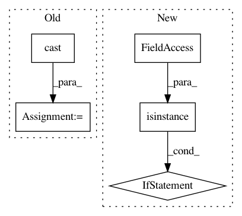

5fc4c351699c9007a727eaaef99413962cf0818f,official/nlp/modeling/layers/self_attention_mask.py,SelfAttentionMask,call,#SelfAttentionMask#Any#,33
Before Change
to_shape = tf_utils.get_shape_list(to_mask, expected_rank=2)
to_seq_length = to_shape[1]
to_mask = tf.cast(
tf.reshape(to_mask, [batch_size, 1, to_seq_length]),
dtype=from_tensor.dtype)
// We don"t assume that `from_tensor` is a mask (although it could be). We
// don"t actually care if we attend *from* padding tokens (only *to* padding)
// tokens so we create a tensor of all ones.
After Change
def call(self, inputs):
if isinstance(inputs, list):
return super().call(inputs[0], inputs[1])
else:
return super().call(inputs)
In pattern: SUPERPATTERN
Frequency: 3
Non-data size: 5
Instances
Project Name: tensorflow/models
Commit Name: 5fc4c351699c9007a727eaaef99413962cf0818f
Time: 2020-12-09
Author: hongkuny@google.com
File Name: official/nlp/modeling/layers/self_attention_mask.py
Class Name: SelfAttentionMask
Method Name: call
Project Name: ray-project/ray
Commit Name: 80d314ae5eaadc88061a62c827e1b8670098c1ab
Time: 2020-03-12
Author: sven@anyscale.io
File Name: rllib/utils/exploration/random.py
Class Name: Random
Method Name: get_tf_exploration_action_op
Project Name: tensorflow/transform
Commit Name: deeb372d527073813abb40a2b9a209ad050f1e44
Time: 2018-07-31
Author: tf-transform-dev@google.com
File Name: tensorflow_transform/analyzers.py
Class Name:
Method Name: mean